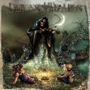

|
|
||
Demons & Wizards (2000) |
|

http://www.icedearth.com/dw/ |
1. Rites of Passage 0:53 |
8/10 |
|
Cuando Jon Schaffer, líder de los norteamericanos Iced Earth, y Hansi Kürsch, vocalista del legendario grupo alemán Blind Guardian, decidieron grabar un disco juntos es evidente que los dioses del metal les otorgaron su beneplácito. "Demons & Wizards" es un trabajo muy bueno, que combina el sonido oscuro y contundente de Iced Earth con la inconfundible voz y los brillantes coros de Blind Guardian para conseguir una atmósfera opresiva y demoníaca, pero luminosa y cargada de magia. La producción es impecable, el sonido perfecto y la presentación absolutamente excepcional. La edición en digipack es una maravilla, y no sólo por los dibujos que adornan el libro con las letras y la magnífica portada, sino porque cuando abres por completo el digipack, el violinista de la portada surge de la misma como en los libros de cuentos para niños. Increíble. "Rites of Passage" es una breve introducción instrumental, que tiene la virtud de introducir al oyente en lo que es la atmósfera de todo el disco con un sonido triste que es casi un lamento. "Heaven Denies" irrumpe con fuerza incontenible, riffs explosivos, la vibrante voz de Hansi Kürsch, un magnífico coro estilo Blind Guardian y un estribillo que pasará a la historia del metal. En la última parte de la canción sin embargo, el ritmo decelera, y la desesperación se abre paso. La voz acaba siendo casi un triste susurro. "Poor Man's Crusade" trae otra vez los oscuros riffs de guitarra de Jon Schaffer, aunque algo repetitivos esta vez, como soporte a la voz única de Hansi Kürsch. Un cambio de ritmo en el estribillo, de nuevo con coros, aporta variedad a la canción. "Fiddler on the Green" es una balada, dividida en dos partes. La primera, lenta, triste, con la voz de Hansi acompañada por guitarras sin apenas distorsión. En la segunda la tristeza se vuelve desolación, las guitarras se vuelven agresivas y distorsionadas, aunque mantienen la línea melódica de la primera. Aparece también un solo de guitarra bastante interesante, aunque en este álbum no haya muchos para comparar. La fuerza y la velocidad vuelven con "Blood on my Hands", junto a los coros y los cambios de ritmo. La superposición entre la voz de Hansi y los coros es perfecta. "Path of Glory" es otra canción lenta, donde la guitarra acústica también tiene peso en los pasajes más tristes, aunque la distorsión aparece para darle fuerza justo cuando hace falta. El que posiblemente es el mejor solo de guitarra del disco aparece en esta canción. "Winter of Souls" es otro de los grandes momentos del álbum. Cambios de ritmo, coros, y un estribillo pegadizo y potente, en la línea de los mejores Blind Guardian. Una parte más melódica, acústica, en medio de la canción, da paso de nuevo a la melodía principal, distorsionada y oscura que lleva sin vacilar de nuevo al estribillo que cierra la que quizás es la mejor canción de este disco. "The Whistler" es una canción con moraleja, evidentemente inspirada en la fábula del flautista de Hamelín. De ritmo moderado, es la voz de Hansi Kürsch la que lleva principalmente el peso de esta canción, aunque aparecen algunos de los típicos riffs de Jon Schaffer. No se debe tracionar al flautista... "Tear Down the Wall" recupera la atmósfera tenebrosa. Otra gran canción donde la combinación entre la oscuridad de las guitarras y la brillantez de las voces es llevada al máximo. "Gallows Pole" es de nuevo triste y deprimente. Las voces aparecen en algunos momentos distorsionadas. "My Last Sunrise" mantiene el mismo aire de pena y desolación que el anterior corte. De nuevo los cambios de ritmo mantienen el interés del oyente. "Chant",una corta canción instrumental con coros de aire monástico cierra este álbum. En mi copia aparece una versión de la canción de Cream, "White Room", como Bonus Track. El sonido es similar al del resto del album, pero menos tenebroso y desolador. Lo que me ha impedido darle a este disco una puntuación más alta, ha sido el hecho de que la melodía no está demasiado trabajada en ninguna parte del álbum. Los riffs de guitarra son algo previsibles y algunas canciones se hacen un poquito pesadas a ratos. Es la voz de Hansi Kürsch la que aporta variedad y brillantez a este álbum, aunque el ambiente lúgubre y la energía contenida hay que achacárselas sin duda a Jon Schaffer. En resumen, un gran trabajo que podría haber sido mejor. |
||
Rubén Béjar |
||